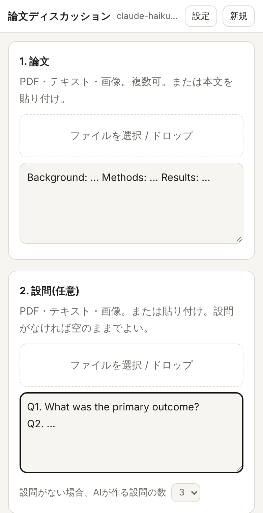
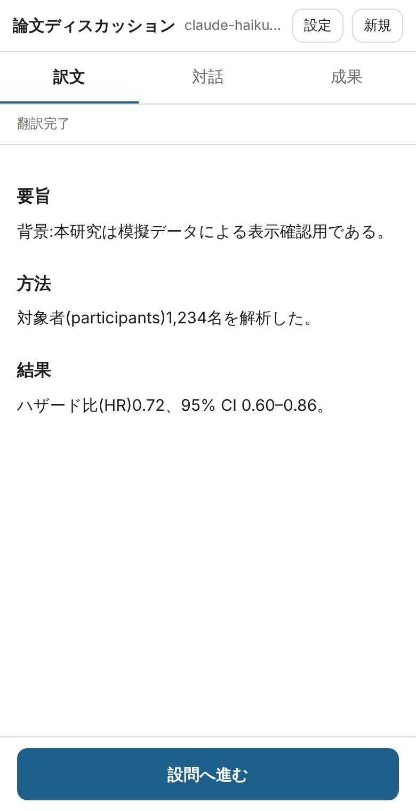
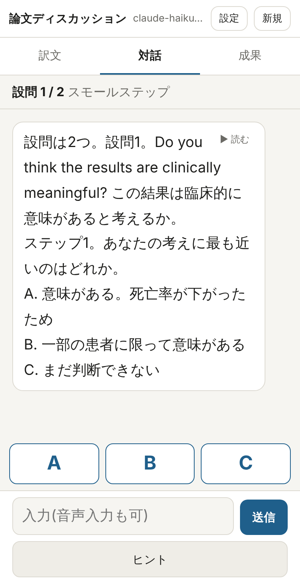
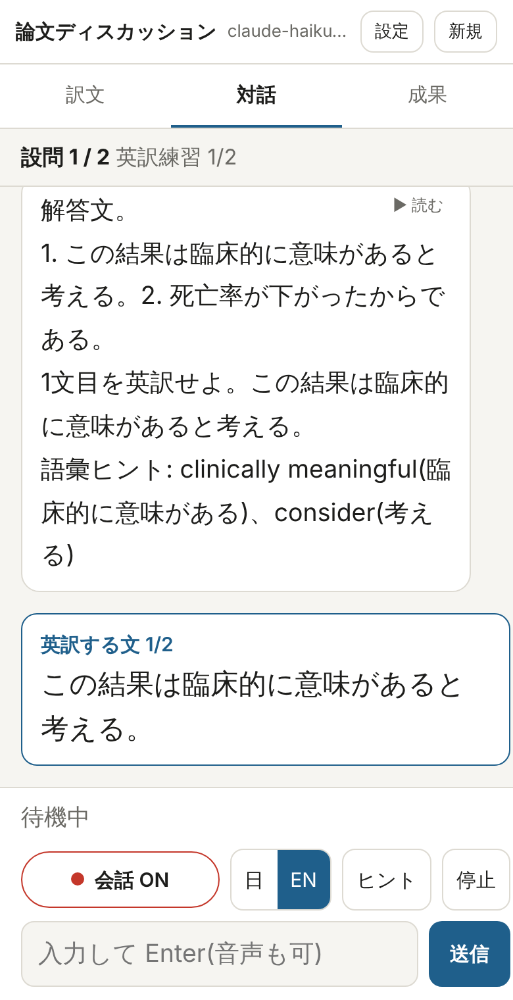
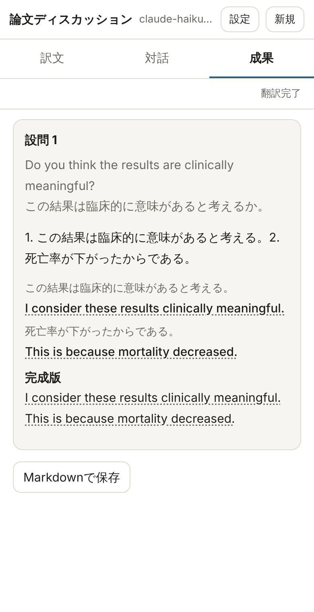

① 論文と設問を読み込む
- 「1. 論文」「2. 設問」それぞれにファイルを選ぶ。PDF・テキスト・画像(写真)に対応。複数ファイル可。
- 設問は任意。空のままにすると、AIが論文から討論用の設問(解釈・意見を問うもの)を作る。作る数は1〜5個から選ぶ(既定3個)。
- 本文を貼り付けてもよい。
- Wordファイルは読めない。PDFに変換してから選ぶ。
- 「3. 最初に表示するもの」で、全文訳・要約・なし(すぐ設問へ)を選ぶ。
- 「開始」を押す。
英語論文の日本語訳を読み、設問を小さな問いに分けて解き、解答を1文ずつ英訳する。音声で会話しながら進める学習アプリ。
最初に一度だけ、サーバーの準備(第2章・第3章)が必要。準備が済めば、スマホでURLを開くだけで使える。
| 項目 | 何か | 入手方法 |
|---|---|---|
| Anthropic APIキー | アプリがAIを呼び出すための鍵。sk-ant- で始まる文字列。利用料はこのキーの持ち主に請求される。 | Anthropicのコンソールで発行(2.1) |
| アプリのパスワード ( APP_PASSWORD) | 公開したアプリに他人が入れないようにする合言葉。 | どこかで発行するものではない。自分で決める(2.2) |
| GitHubアカウント | コードの置き場所。作成済み。 | — |
| Renderアカウント | アプリを動かすサーバー。httpsのURLが付く。 | GitHubアカウントで登録(第3章) |
https://platform.claude.com(Anthropicのコンソール)を開き、アカウントを作成してログインする。paper-discussion)。kaigi-Rondoku-2026x のような形。マイクはhttpsのURLでしか使えない。Renderに置くと、httpsのURLが自動で付く。作業はPCで行うのが楽。
https://render.com を開き、「Get Started」から GitHubアカウントで 登録・ログインする。english-article-discussion を含める。mokobear-git/english-article-discussion を選ぶ。設定ファイル(render.yaml)が自動で読み込まれる。ANTHROPIC_API_KEY: 2.1でコピーしたAPIキーAPP_PASSWORD: 2.2で決めたパスワードhttps://english-article-discussion-xxxx.onrender.com のようなURLが表示される。english-article-discussion → 「Environment」で値を書き換えて保存する。自動で再起動し、新しい値が使われる。





| ボタン | 働き |
|---|---|
| 会話 | 会話モードのON/OFF。ONの間は、応答の表示(と英文の読み上げ)が終わると自動で聞き取りに戻る。赤い点が動いていれば聞き取り中。 |
| 日 / EN | 聞き取る言語の切り替え。英訳の段階では自動で EN になる。日本語で質問したいときは「日」に戻す。 |
| ヒント | 追加のヒントを求める。 |
| 停止 | 読み上げを止める。 |
| ▶ 読む | 各メッセージの右上。押したときだけ、そのメッセージを読み上げる。 |
| 成果タブの英文 | 英文をタップすると、その英文を読み上げる。 |
アプリの応答中に話しかけると、その応答を途中で止めて、新しい発話に答える。
| 項目 | 内容 |
|---|---|
| 読み上げ | 「推奨英文のみ」(既定。英訳の確定英文だけを英語で読む)、「応答をすべて」、「なし」から選ぶ。 |
| 読み上げ速度 | 0.8〜1.8倍。英文の聞き取り練習には1.0前後を推奨。 |
| 日本語の声 / 英語の声 | 端末に入っている声から選ぶ。 |
| 無音で送信するまで | 話し終えてから自動送信するまでの待ち時間(ミリ秒)。途中で送られてしまう場合は長くする(例 1800)。 |
| 読み上げ中も聞き取る | ONにすると、読み上げの途中で話して割り込める。スピーカーの音を拾うため、イヤホン使用時のみONにする。 |
| 入力言語を自動切替 | 英訳の段階で聞き取り言語を自動で English にする。 |
| 症状 | 対処 |
|---|---|
| マイクが反応しない | URLが https で始まっているか確認。ブラウザのサイト設定でマイクを「許可」にする。iPhoneは「設定 → Safari → マイク」も確認。 |
| 聞き取りが止まる(iPhone) | iPhoneのSafariは連続の聞き取りが不安定なことがある。「会話」ボタンを押し直す。 |
| 読み上げの音が出ない | iPhoneの消音モード(サイレントスイッチ)を解除し、音量を上げる。設定の「読み上げ」が「なし」になっていないか確認。日本語の問いは既定では読み上げない。 |
| 開くのに時間がかかる | Render無料プランの停止からの起動中。1分ほど待つ。 |
| 「APIキーが無効」と出る | Renderの Environment で ANTHROPIC_API_KEY を確認。コンソールでキーが削除されていないか、クレジット残高があるか確認。 |
| 「レート制限」と出る | 短時間に使いすぎ。少し待ってから再度話す。 |
| 訳文欄に質問が出て先に進めない | 訳文欄は答えを入力する場所ではない。上部の「要約」に切り替えるか、そのまま「設問へ進む」を押す。 |
| 以前の記録が消えた | Render無料プランの停止で消えた。保存したMarkdownから振り返る。 |
| パスワードを忘れた | Renderの Environment で APP_PASSWORD を確認・変更する。 |
音声認識はブラウザの機能を使う。ChromeとSafariの音声認識では、音声がGoogleまたはAppleのサーバーに送られる。論文の内容はAnthropicのAPIに送られる。Firefoxは音声認識に対応していないため、文字入力のみとなる。
スマホを使わず、自分のPCのブラウザで使う方法。PCでは https でなくても localhost ならマイクが使える。
https://nodejs.org からインストールする。git clone https://github.com/mokobear-git/english-article-discussion.git cd english-article-discussion npm install
Mac: export ANTHROPIC_API_KEY=sk-ant-...(自分のキー)
npm start
Windows: $env:ANTHROPIC_API_KEY="sk-ant-...(自分のキー)"
npm starthttp://localhost:3000 を開く。PCで起動したアプリをスマホから一時的に使う方法(cloudflaredによる公開)は、リポジトリの README に記載。